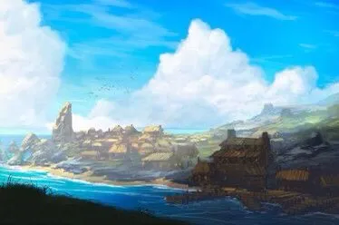
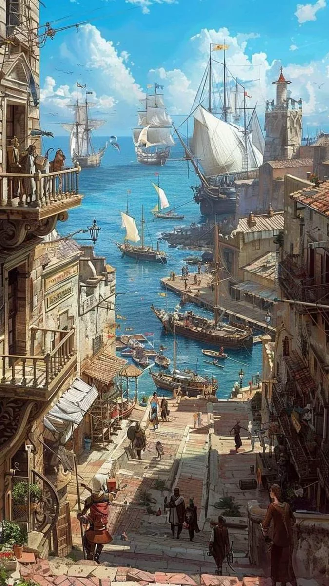

River and Sea
Orma’aiqua stands at the entrance of the river that follows the base of the cliffs and meets the sea.
Its place on the water makes it a frequent stop for merchant and fishing vessels.

Orma’aiqua is a sprawling city of docks, taverns, and fisheries where the river meets the sea.
Orma’aiqua stands at the entrance of the river that follows the base of the cliffs and meets the sea.
Its place on the water makes it a frequent stop for merchant and fishing vessels.
The city is a sprawl of docks, taverns, and fisheries. So many buildings are hastily built on and around the docks that it is difficult to see where land begins and sea ends.
Those who move through Orma’aiqua often find themselves crossing rope and plank paths, with water or land beneath them by uncertain turns.

Orma’aiqua is home to sea-elves. If they were greedier for gold, they would have it; instead, the city remains defined more by water, work, and passage than by conquest of trade.
The city is not impoverished. Its lack of hunger for gold comes partly from having little need of more.
Orma’aiqua stands under Aurnoore’s authority. Its people begrudgingly pay taxes and send young people as soldiers when required, though the arrangement has endured so long that few dwell on it.
Orma’aiqua is open and hospitable in its own chaotic fashion. A visitor might be given a place to stay for coin, a curious artifact, help around the house, or simply a good story and song.